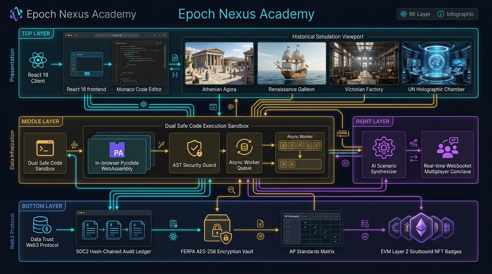
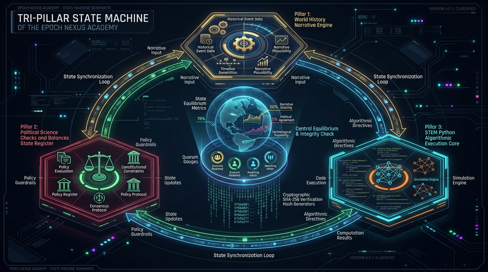
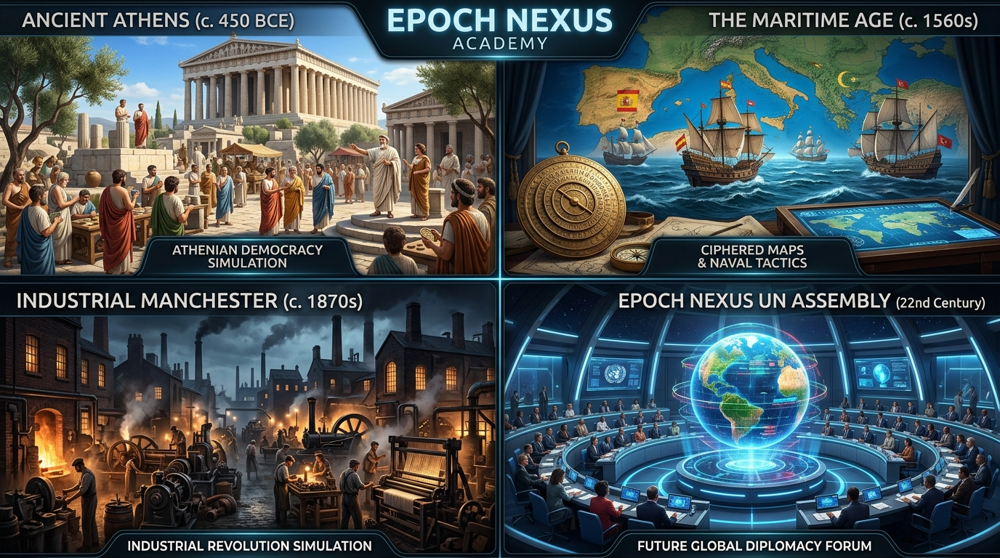
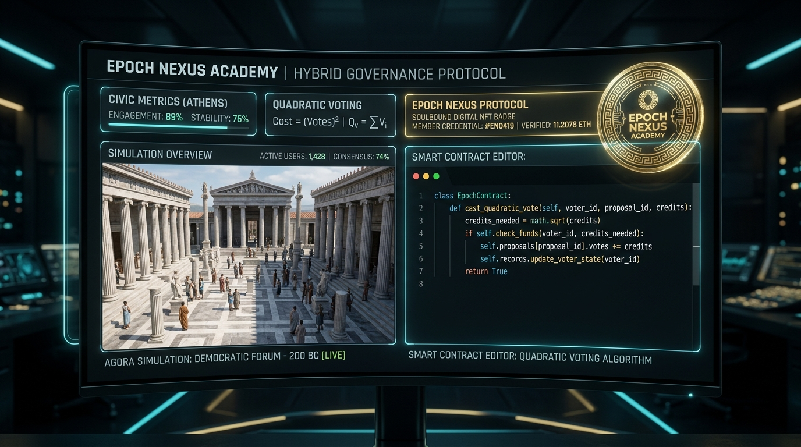

Comprehensive architectural diagrams, simulation viewports, and Tri-Pillar state machine blueprints.

React 18 Client, Monaco Code Editor, and 4 Historical Simulation Viewports.
Dual Pyodide Wasm Sandbox (96%+ offload) with AST Security & Worker Queue.
AI Scenario Synthesizer Engine & Real-time WebSockets Multiplayer Conclave.
SOC2 Audit Ledger, FERPA Encryption Vault, and Soulbound ERC-5192 Badges.

The Tri-Pillar State Machine unifies high-stakes historical events (Pillar 1), constitutional checks, vetoes, and quorum registers (Pillar 2), and automated Python test assertions (Pillar 3) into an infinite, self-reinforcing equilibrium loop.

Athenian Agora (508 BCE), Venetian Galleons (1560 CE), Victorian Manchester (1847 CE), UN Treaty Chamber (2030+ CE).

Dual-pane client interface showing live Athenian Agora voting, Quadratic Voting Python code, and verifiable gold Soulbound NFT badges.